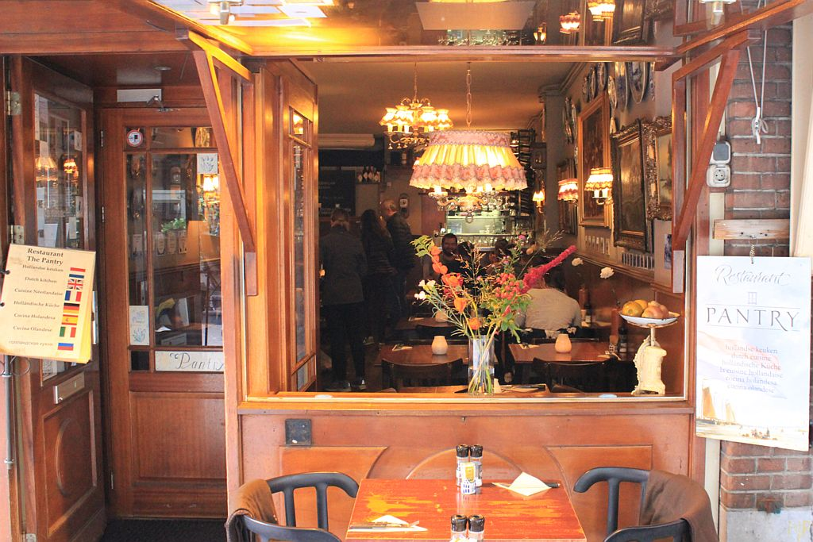
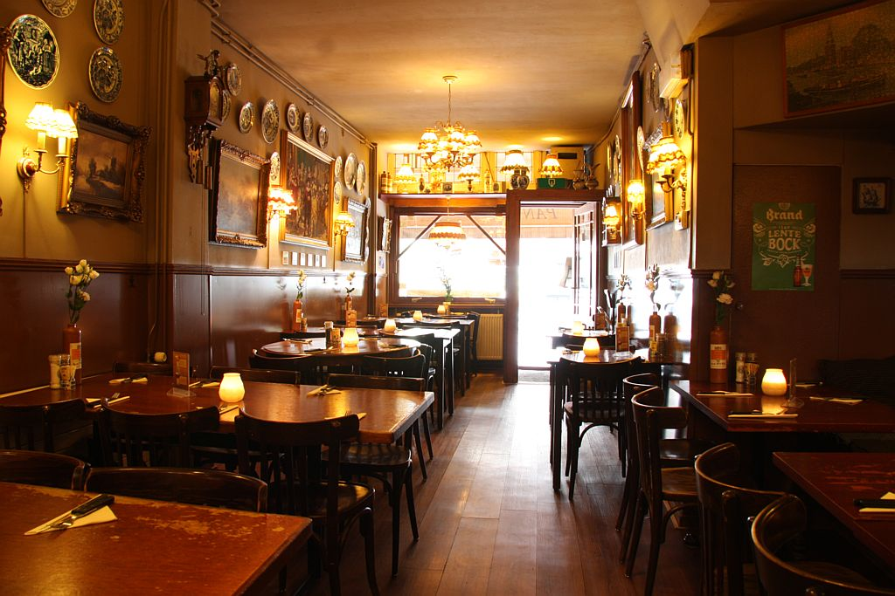
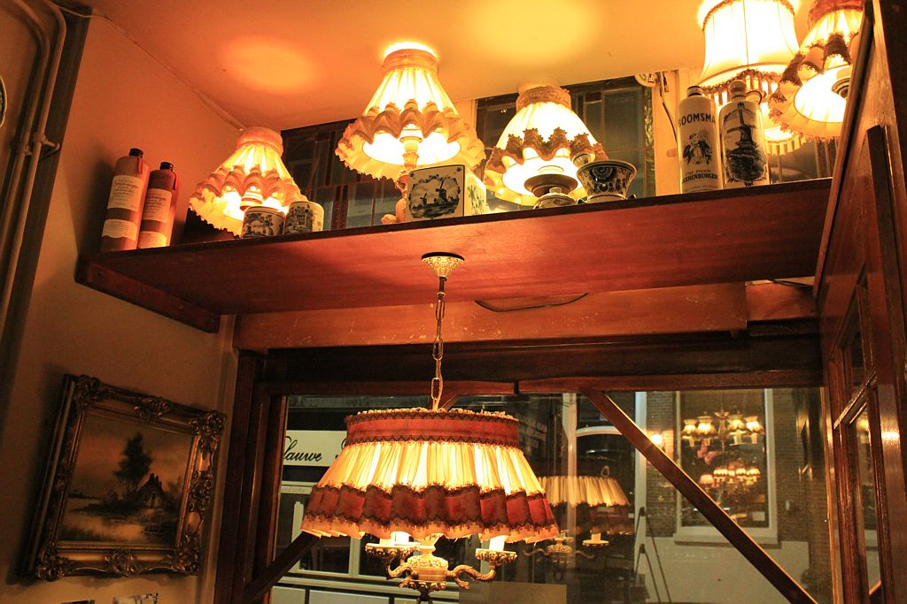
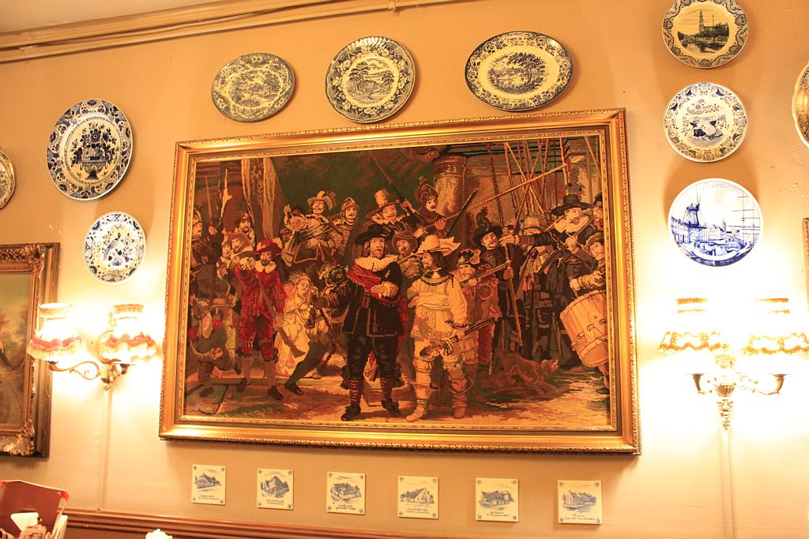
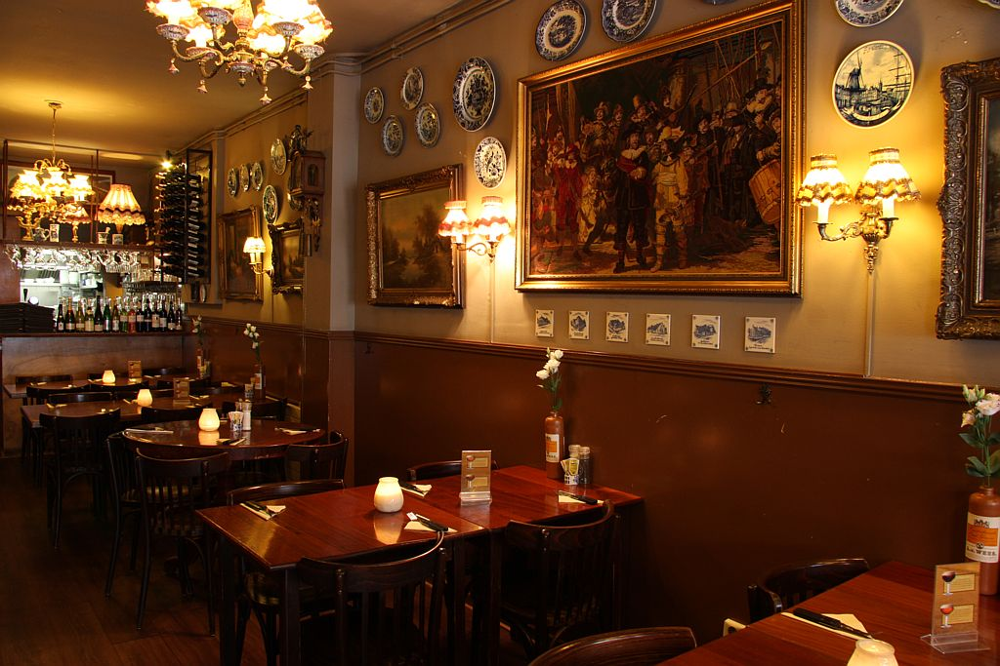
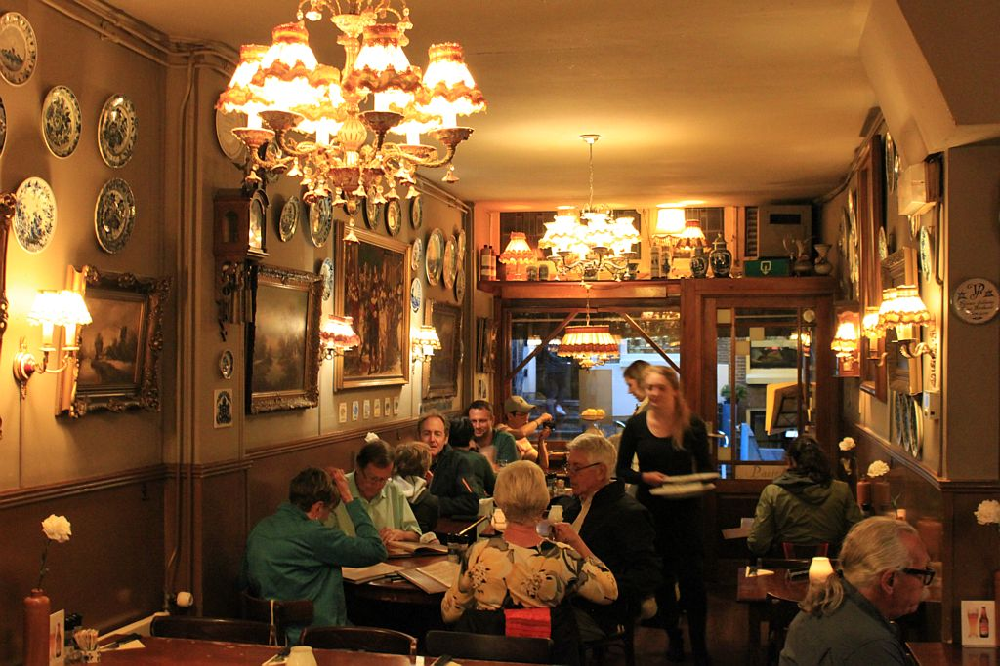
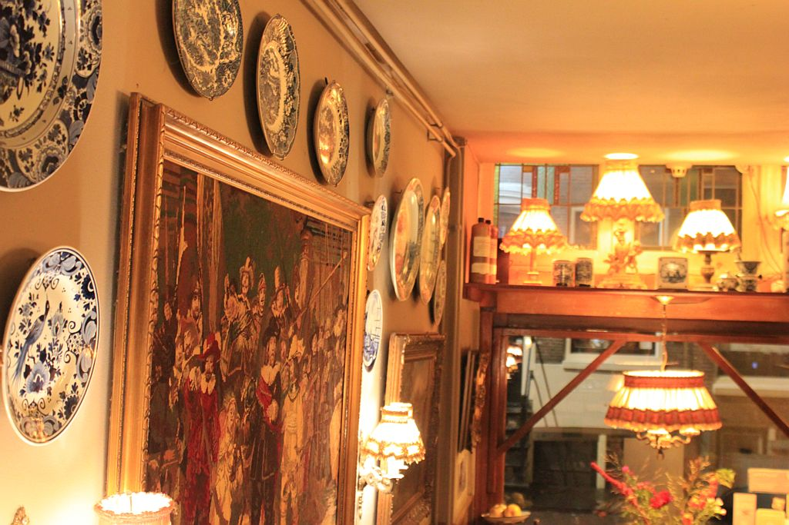
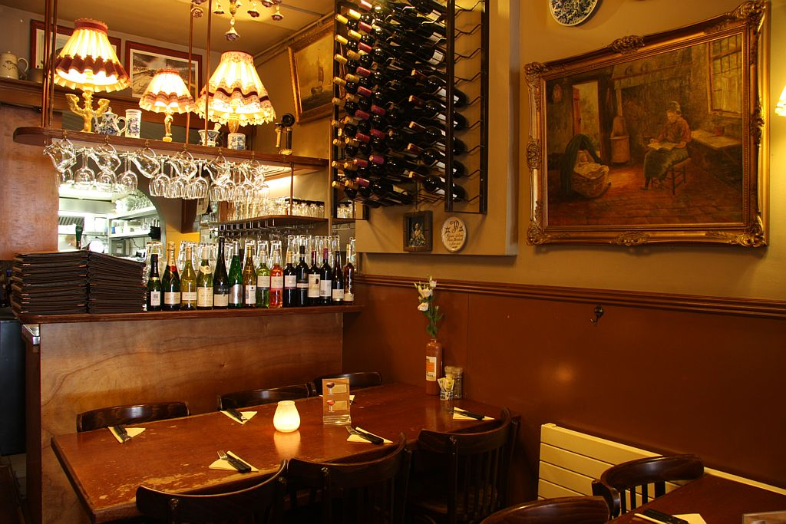

Dutch Delight
€ 29,00
- VoorErwtensoep met roggebrood en katenspek
- HoofdCombinatie van hutspot, boerenkool- en zuurkoolstamppot met rookworst of gehaktbal
- NaVlaflip
Ook vegetarisch mogelijk
Restaurant in Amsterdam, sinds 2000
Traditionele, huisgemaakte Nederlandse gerechten in een Hollandse huiskamer. Op 250 meter van het Leidseplein.
Elke dag open van 10:30 tot 22:30

Stap binnen bij The Pantry en neem plaats in ons op-en-top Nederlandse restaurant, waar gezelligheid geen tijd kent. Ons team ontvangt u warm en gastvrij in een Hollandse huiskamersfeer, boordevol Amsterdamse gezelligheid.
Met de nummers zoals op onze kaart. De stamppotten worden geserveerd met appelmoes, piccalillysaus en zuur.
Brood met kruidenboter
Combinatie van 3 Hollandse worsten
Met brood, Amsterdams zuur en grove mosterd
Vis kwartet
Haring, gerookte paling, makreel en gerookte zalm, met toast
Vis trio
Paling, makreel en zalm, met toast
Gerookte paling op toast
2 stuks
Haring met uitjes en zuur
2 stuks
Selectie traditionele voorgerechten
Erwtensoep, bitterballen en haring
Erwtensoep
Met roggebrood en katenspek
Bitterballen, vlees of vegetarisch
6 stuks, met grove Zaanse mosterd
Bitterballen Old Amsterdam kaas
4 stuks, met honingmosterdsaus
Hollandse garnalenkroketjes
3 stuks, met cocktailsausje. 3 extra: 3,00
Tomatensoep
Oerbeenham
450 g, met honingmosterdsaus, frietjes en salade
Biefstuk
200 g, met champignons, uien, frietjes en seizoensgroenten
Kipsaté
200 g, met atjar, kroepoek, gebakken uitjes, frietjes en salade
Zeebaars gestoomd met verse groene kruiden
Met aardappelpuree en groentenmix
Zalm met kreeftensaus
Met aardappelpuree en groentenmix
Combinatie XXL
Hutspot, boerenkool, bloemkool en zuurkool, met rookworst én gehaktbal
Combinatie hutspot, boerenkool en zuurkool
Hutspot
Boerenkoolstamppot
Zuurkoolstamppot met spekjes
Bloemkoolstamppot
Runderhachee
Met rode kool en aardappelpuree
Ovenschotel
Bloemkool, gehakt, uien, kerrie, oude kaas en aardappelpuree
Kapucijners
Met speklapjes, zuur, piccalilly, uien en appelmoes
Kindermenu
Frietjes met naar keuze 4 bitterballen, een gehaktbal of rookworst. Toe: een bol vanille-ijs met slagroom
Met vegetarische jus, appelmoes, piccalillysaus en zuur
Combinatie hutspot, boerenkool en bloemkool
Hutspot
Boerenkoolstamppot
Bloemkoolstamppot
Ovenschotel
Prei, uien, kerrie, oude kaas en aardappelpuree
Kaasfondue
Met brood, rauwkost en salade
Gegratineerde geitenkaassalade
Met appel, honing, walnoten en brood
Appeltaart met vanille-ijs en slagroom
Poffertjes
Vlaflip
Stroopwafelijs
Chocoduo met advocaat
Boerenjongensijs met slagroom
Vanille-ijs met rozijnen in rum
Pantry ijscoupe
Koffie speciaal
Irish (whisky), French (Grand Marnier), Italian (Amaretto), Spanish (Tia Maria) of Baileys
Jenever
Jong of oud
Likeur
Volmaakt geluk, boterbabbelaar, drop, hazelnoot, bruidstranen, appeltaart, bitterkoek of stroopwafel
Bij het eten schenken we Nederlandse wijn uit de Gelderse Achterhoek en lokale (speciaal)bieren. En na het diner een jenever of likeur.
Geniet van de gezellige entourage met sfeervolle lampenkapjes, Delfts blauw, schilderijen vol Hollandse taferelen en bijpassende muziek.







In het hart van Amsterdam is sinds 2000 The Pantry te vinden. Een echt familiebedrijf, waar u in een gezellige huiskamersfeer kennismaakt met huisgemaakte gerechten uit de Nederlandse keuken.
Jerome, geboren en getogen Amsterdammer met een groot horecahart, en zijn vrouw Renate ontvangen u samen met een enthousiast en vakkundig team.
Alles wordt vers bereid, op traditionele recepten. Ideaal voor een diner voor of na het theater, de bioscoop of het museum.
Op dit moment hebben we geen vacatures, maar een open sollicitatie is altijd welkom. Mail naar info@thepantry.nl.
Reserveer online of bel ons. Online vol? Loop gerust binnen: we houden ruimte vrij voor gasten zonder reservering.
Elke dag
10:30 tot 22:30
Rond de jaarwisseling
+31 20 6200 922
info@thepantry.nl